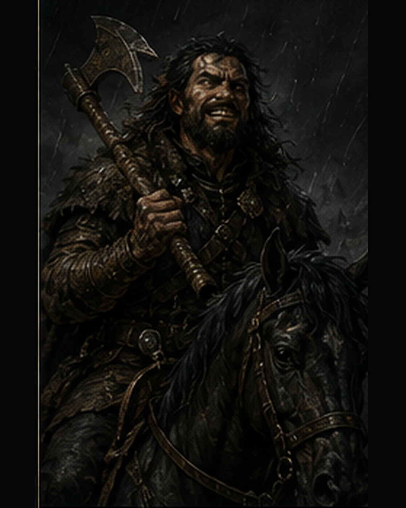
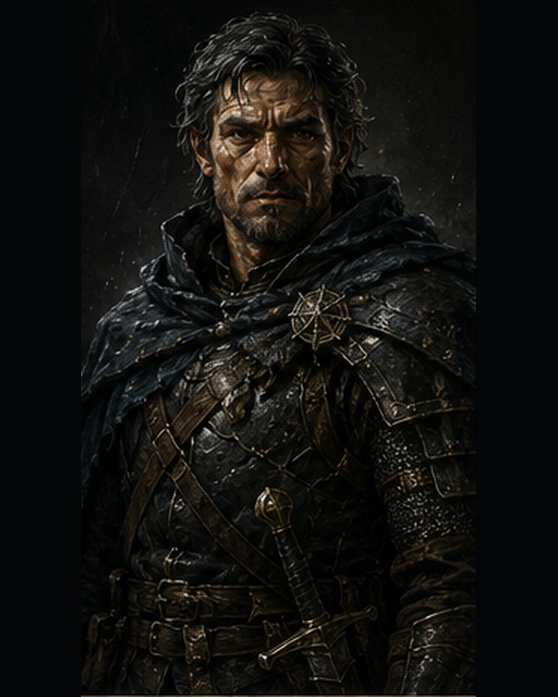

RAIDER CAPTAIN
❖
THE GAME MASTER
The caravan burns below the ridge. Smoke folds into the rain and makes the road look smaller than it is. The raiders move badly — except near their captain, where they move with shape. You see the whole field before you decide what any of it means.

KAEL VORN

Kael
captain
the dice roll behind the screen